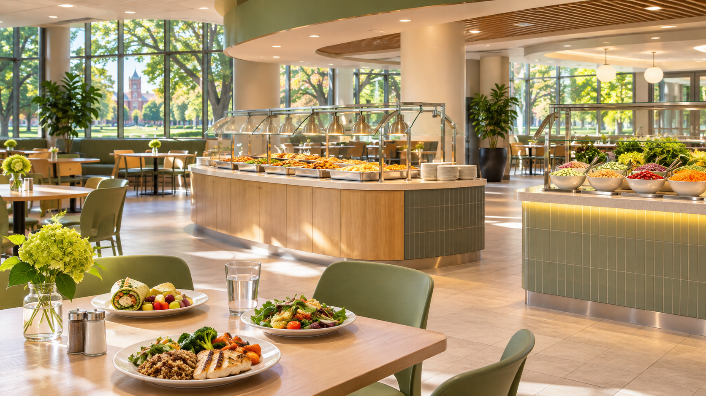
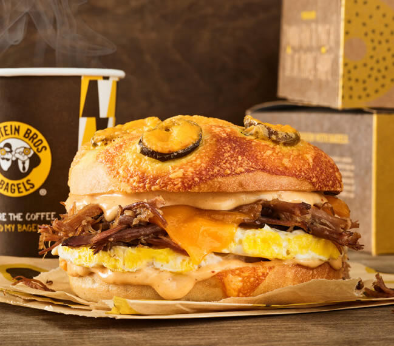
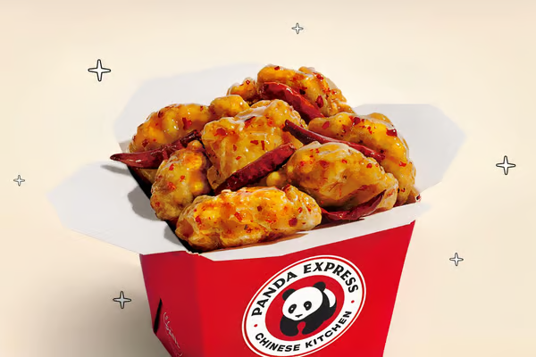
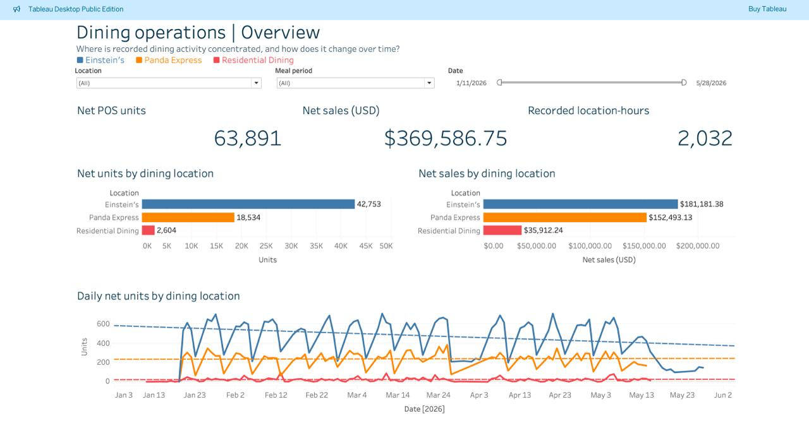
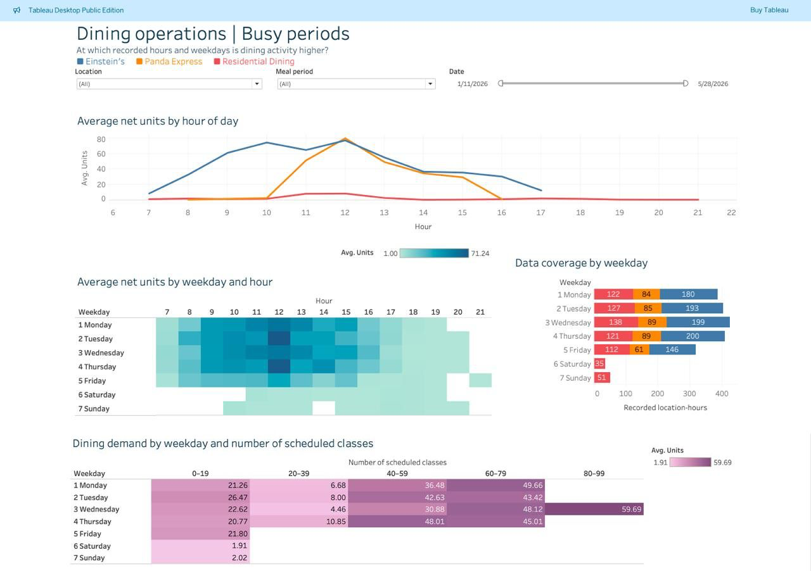
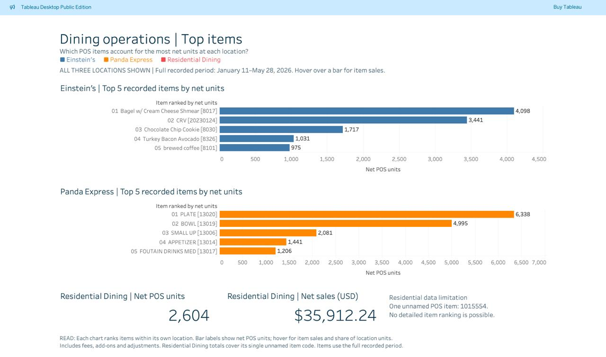
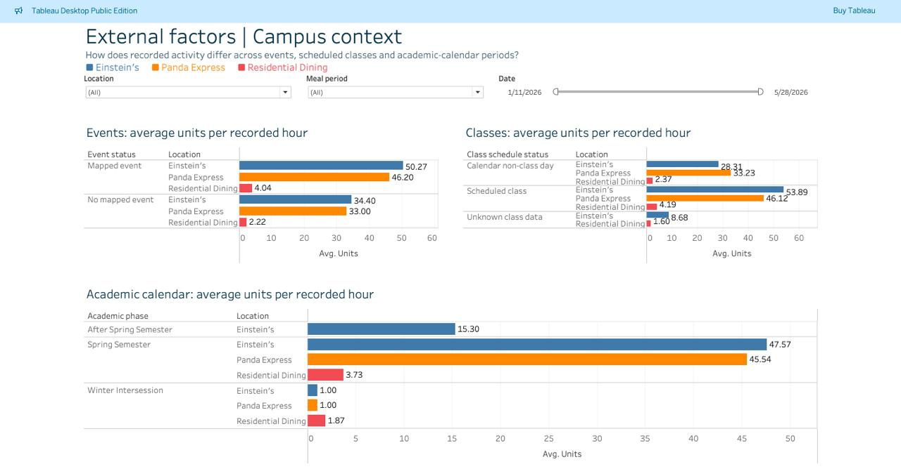
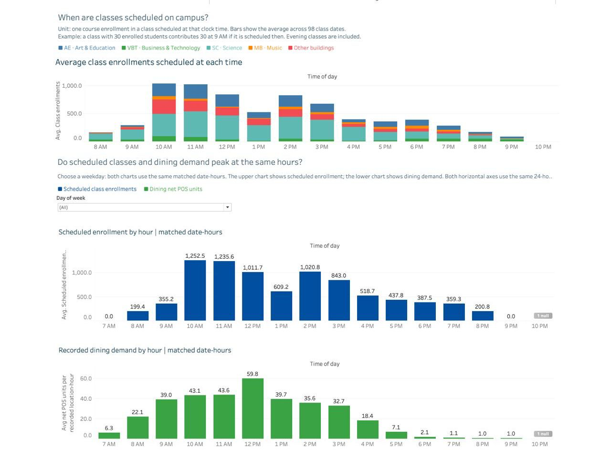
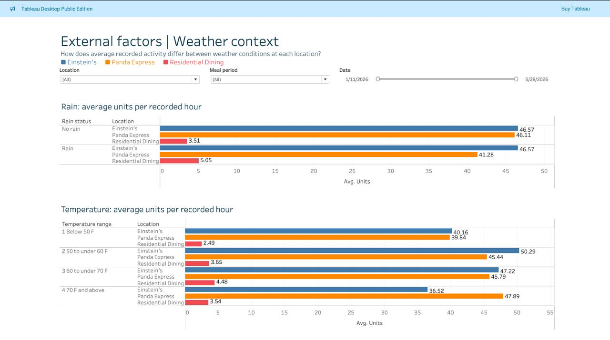

Plan ahead
Pick a date and time bucket to estimate expected sales by station, so the team can think ahead about preparation and daily capacity.
A capstone story about turning historical campus dining demand into clearer planning signals for the people behind the counter.



Campus dining is a rhythm: weekday classes, outlet patterns, closures, and rush hours all shape how much food moves through each station. ServeSmart brings those signals into one forecasting workflow.
The ServeSmart app turns the project’s data and forecasting work into practical decisions a dining team can understand quickly.
Pick a date and time bucket to estimate expected sales by station, so the team can think ahead about preparation and daily capacity.
Ask about predicted sales, peak hours, or top-selling items and turn the result into a clear next step.
Use historical trends, location comparisons, busy periods, and top-item views to understand what is happening before making a decision.
The app is meant to help a dining team move from a chart to a next question — without requiring them to read a notebook first.
Explore the six finalized Tableau views. Click any image to enlarge it and open its explanation.






All seven models use the same common evaluation basis within each horizon. Lower WAPE is better.
280 common test rows · actual-unit denominator 8,324 · selected: Random Forest
43 common test rows · actual-unit denominator 8,400 · selected: XGBoost
The live ServeSmart application gives the project a usable front end for forecast dates, time buckets, station-level predicted sales, and plain-language questions.
Select a forecast date and time bucket to create a focused planning snapshot.
Review predicted sales by Einstein’s, Panda’s, and Dining Commons in one place. Predicted units are recorded POS sales quantities, not customer counts.
Exact historical backtest dates use the selected model outputs. Future dates may use a labeled historical fallback when the required model-ready features are unavailable.
Each layer has a defined job, so the final app can explain where a forecast came from and how it should be used.
POS demand, location, date, hour, academic context, events, weather, and optional schedule evidence.
Chronological splits, approved predictors, cutoff-safe histories, and explicit missing-data policies.
Predicted sales by station, comparison tables, historical charts, and plain-English explanations.
Click a restaurant to reveal the role it plays in the analysis. These are historical patterns from recorded POS activity.
We brought campus dining and context data together, cleaned it, and checked it before using it for analysis or forecasting.
POS transactions, items, locations, academic calendar, classes, events, and weather.
Align column names, dates, times, location labels, and recorded operating periods.
Check duplicates, missing critical fields, reconciliations, and source-to-fact totals.
Join context by safe date/hour keys and create hourly and daily demand summaries.
Operational and campus context files.
Consistent fields and quality checks.
Forecast-safe date and hour keys.
Trusted tables for EDA and models.
The dashboards surface the operational patterns that make forecasting worth attempting: location concentration, busy periods, top items, and academic context.
Einstein’s contributes the largest recorded unit volume in the supplied dashboard period, followed by Panda Express and Residential Dining.
Recorded activity is concentrated around late morning and midday, with weekday and hour patterns varying by location.
Academic phase and scheduled class activity are useful context signals, but they should be interpreted as associations, not causal proof.
Hourly and daily demand are evaluated separately because they have different time grains, feature availability, and planning questions.
Historical Average, Seasonal Naive, Random Forest, XGBoost, LightGBM, Ridge, and Prophet were tested at both hourly and daily levels.
Uses location, weekday, hour, historical demand, calendar context, and available student signals to estimate recorded POS units for a specific time bucket.
Uses daily demand history, location, calendar context, and available student signals to estimate recorded POS units for a full recorded day.
ServeSmart helps a dining team ask what to prepare, what to monitor, and where to investigate — without claiming exact purchasing quantities or measured savings.
Use predicted sales by station as an early planning signal for food prep, staffing conversations, and capacity checks.
Compare the current view with historical patterns and investigate unusual dates, hours, locations, or item mix.
Connect expected demand to a review of high-volume items and operational constraints; do not treat the forecast as an exact order.
Bring in closures, events, source availability, and local knowledge before acting on any planning prompt.
Meet the team behind ServeSmart AI. Each role connects a different part of the project—from data preparation to the final decision-support experience.
Obtained dining reports, extracted class schedules and events, organized external sources, built interactive Tableau dashboards, developed baseline and advanced forecasting methods, and evaluated model performance.
Developed the interactive web presentation and application experience, designed the analytical data structure, defined facts and dimensions, connected campus context to hourly demand, shaped recommendation logic, and integrated model outputs.
Prepared the approved ML flat file, checked location-date-hour grain, reviewed missing values and negative demand, validated features, reconciled targets, and documented data-quality treatment.
Developed baseline forecasting work and built the repeatable ETL workflow: loaded source files, standardized fields, checked duplicates and critical missing values, aggregated hourly and daily demand, joined context sources, and documented reruns.
ServeSmart AI gives us a practical historical foundation for understanding campus dining demand and a clear path for making the system more useful over time.
Our analysis is based on historical dining records from three campus locations. Forecasting performance varies across locations, and additional data would help improve reliability.
Expand the dataset, incorporate updated campus schedules and weather forecasts, and continue refining the models using new dining data.
Work with campus dining teams to explore how forecasting insights could support food preparation, inventory planning, and daily operations.
Open the live Streamlit app to move from this capstone narrative into the interactive ServeSmart experience.
Within each horizon, every model uses the same common chronological test keys: 280 hourly rows with 8,324 total actual units, and 43 daily rows with 8,400 total actual units.
WAPE is calculated as 100 × total absolute error ÷ total actual units. The selected recovered handoff reports Random Forest at 35.45% hourly WAPE and XGBoost at 29.04% daily WAPE.
The comparison table also reports reconstructed current-input results for the other models. They are shown for transparent comparison, while the final selected models remain tied to the verified handoff artifacts. These are historical backtests, not guarantees of future accuracy.